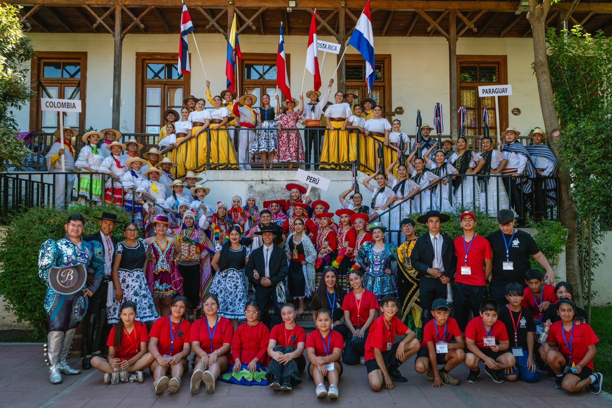

Festival Nacional e Internacional de Folklore
Pewma Antü
⟶ Encuentro de las Estrellas ⟵
Un espacio de encuentro, intercambio cultural y celebración de nuestras raíces a través de la música, la danza y la tradición de los pueblos.
El Encuentro de las Estrellas
El Festival Pewma Antü nació en Chile con el propósito de ser un puente vivo entre las culturas del mundo a través de la música y la danza tradicional. Diseñado como una experiencia itinerante, este encuentro lleva color, ritmo y espectáculos de primer nivel directo al corazón de las comunidades locales, transformando plazas y teatros en escenarios de hermandad.
Con los años, el festival se convirtió en un verdadero hogar anual. Inspirados por el espíritu de nuestro himno de Jeremy Armijo, cada edición abrimos las puertas para decir: ¡Bienvenidos, viajeros de corazón! Aquí no hay fronteras ni competencias, solo una gran familia global que se reúne para compartir las risas tras bambalinas, la magia de las raíces y el brillo de cada tradición.

Nuestro himno
El Himno Pewma Antü
¡Bienvenidos viajeros del corazón! Pewma Antü los llama en una sola voz, que suenen los pasos, que vibre el tambor, las estrellas se encuentran en esta canción. ¡Bailen, hermanos, sin fronteras ni ayer! Que el folklore nos una de sur a vergel, en Chile se enciende la fiesta y la fe, Pewma Antü es sueño… ¡y hoy es real!
🎧 Escúchanos en Spotify
Nuestra esencia
La visión de Jeremy Armijo
Para Jeremy Armijo, fundador y director del Festival Pewma Antü, la cultura es un puente que une a las personas más allá de las fronteras. Su visión nace del profundo convencimiento de que el folclore es una herramienta para fortalecer la identidad, promover el respeto por la diversidad y crear espacios de encuentro entre los pueblos.
Bajo este propósito, el Festival Pewma Antü se ha consolidado como un escenario de intercambio cultural donde artistas, delegaciones y comunidades de Chile y el mundo comparten sus tradiciones, historias y expresiones artísticas. Más que un evento, representa un movimiento que impulsa la formación, la integración y el desarrollo cultural, acercando el arte a todos los territorios y fomentando el diálogo intercultural.
El sueño de Jeremy Armijo es que Pewma Antü continúe creciendo como un referente nacional e internacional, llevando el mensaje de que la cultura, cuando se comparte con respeto y pasión, tiene el poder de transformar comunidades y construir un futuro donde las tradiciones sigan vivas para las nuevas generaciones.
Nuestro equipo
David Cariman
Mónica Valenzuela
Vicente González
Tabita Fernández
Jeann Parraguez
Países participantes
Pasa el cursor —o toca en el móvil— sobre cada país para ver la agrupación y el año en que participó.
La ruta del festival · Enero 2027 🇨🇱
Diez fechas recorriendo las comunas de Chile. Pincha una parada para ver a su agrupación en Instagram.
Galería
Momentos que reflejan la magia, el color y la hermandad del Festival Pewma Antü. Haz clic en una foto para verla en grande.
Noticias destacadas
Ver todas →Convocatoria abierta para agrupaciones 2027
15 de junio, 2026Ya están abiertas las postulaciones para ser parte de la próxima edición del Festival Pewma Antü.
Éxito total en la edición 2026
28 de enero, 2026Miles de personas vibraron con la música, danza y cultura de 11 agrupaciones nacionales e internacionales.
Próxima programación
Ver calendario →-
15ENEO'Higgins
Nancagua
Inauguración · BAFONAN
-
16ENEMaule
Romeral
Corporación Cultural Romeral
-
17ENEMaule
Curicó
Las Acacias Ballet Folklórico
-
18ENEO'Higgins
Rancagua
Danza Folklórica Maulikan
-
19ENEO'Higgins
Nancagua
BAFONAN
-
21ENEMetropolitana
Renca
DANFORES
-
22ENEMetropolitana
Macul
Walmapu Compañía Folklórica
-
23ENEValparaíso
Llay Llay
Ballet Folklórico de Llay Llay
-
24ENEMetropolitana
Padre Hurtado
Agrupación Folklórica Alborada
-
26ENEMetropolitana
Providencia
Gala de Clausura
Comparte tu experiencia
¿Viviste el Festival Pewma Antü? Cuéntanos qué significó para ti. Tu reseña nos ayuda a seguir creciendo.
Auspician y colaboran
San Fernando
Municipalidad CORE
Consejo Regional Ministerio de las Culturas
las Artes y el Patrimonio SERNATUR Empresas
Colaboradoras
Municipalidad CORE
Consejo Regional Ministerio de las Culturas
las Artes y el Patrimonio SERNATUR Empresas
Colaboradoras